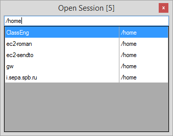
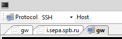

- When some tab connection drops, it can randomly freeze some other tab, so you need to reconnect both of them
- Tab names are right aligned. So, when you have a lot of tabs opened, their width is short and you see only endings of names like '...ain.local' instead of 'server1.doma..'
- When you click 'open new session' button and starting to type search query - it always skips first letter
- And the most unfortunate was that putty-nd sources weren't available. Latest one I was able to find was v6.0_nd1.11 back from 2011.
Nevertheless of those issues I still was using putty-nd. Because other clients like MobaXterm, Xshell, MTPuTTY, mRemoteNG were even more inconvenient. Here is what I liked in putty-nd so much:
- When there are >1000 sessions configured - you will never click by mouse in tree-like menu to open a new session. Preferably to have quick live search bind to hotkey
- Having only hostname in clipboard and no such session configured, open new one based on some predefined settings in couple of keypress
- When session was dropped, restart it without touching mouse (like pressing Enter in it)
SuperPuTTY has almost 2 bullets from 3 above. And most importantly it is opensource. So, next time I got mad from putty-nd frozen tabs I'd decided to move to SuperPuTTY. A little patching and it became a usable client for me ;)
Here is what was done:
1. Open Session dialog

Now search field always stay focused, pressing Up/Down you changing selection in table. Second column shows only folder name of session in tree. To search for all sessions in some folder start searching with '/' (as in example). Searching for hostname was changed to be matched from beginning, to search for any part of hostname - prepend search with '%'.
For example to find connection 'i.sepa.spb.ru' from screenshot, one could search for '%sepa'
2. Added detection of dropped connection. For such tabs icon will be changed (to icon from putty-nd ;)

For those first two tabs context menu will be also reduced. When you switch to such tab and press Enter in console, session will try to reconnect.
For other changes see commit history: github.com/sepich/superputty/commits/master
Download precompiled binaries here: github.com/sepich/superputty/releases
Main patches were submitted back to SuperPuTTY community - hope some of them would be merged upstream.
No comments:
Post a Comment
Links to this post
Create a Link